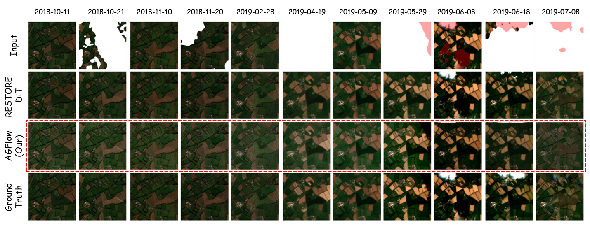
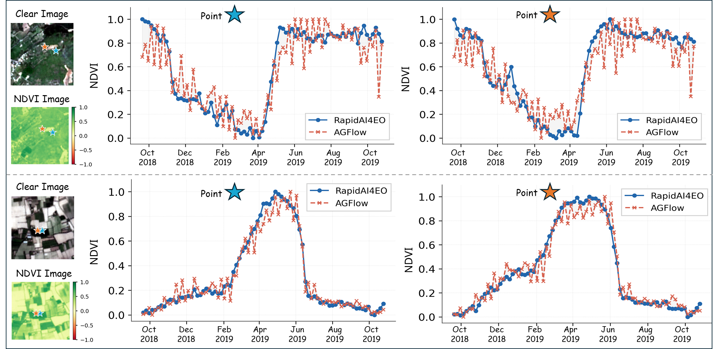

Asynchronous Remote Sensing Time-Series Fusion for Cloud Removal and Anytime Reconstruction
AGFlow is a timestamp-conditioned spatiotemporal flow-matching framework that fuses asynchronous Sentinel-1 SAR and Sentinel-2 optical time series for cloud removal, full-frame gap filling, and anytime reconstruction.
Forouzan Fallah1 Chia-Yu Hsu2 Wenwen Li2 Anna Liljedahl3 Yezhou Yang1
1Arizona State University, School of Computing and Augmented Intelligence2Arizona State University, School of Geographical Sciences and Urban Planning3Woodwell Climate Research Center
Frequent cloud cover makes Sentinel-2 optical time series incomplete and irregular. AGFlow addresses this by treating acquisition time as a first-class signal, internally aligning asynchronous Sentinel-1 and Sentinel-2 observations, modeling spatial structure together with temporal dynamics, and generating cloud-free Sentinel-2 frames at both observed and user-specified dates.
What AGFlow adds
One model for cloud removal, gap filling, and anytime generation
AGFlow is designed for real satellite time series where optical and SAR acquisitions are irregular and asynchronous. Instead of pairing dates outside the model, it learns alignment inside the network and keeps the formulation unified across tasks.
Internal time alignment
Acquisition dates guide temporal attention and cross-sensor matching, so the model can fuse Sentinel-1 and Sentinel-2 without nearest-date preprocessing.
Spatiotemporal generation
A Sequential Denoising Transformer works on spatiotemporal patch tokens, preserving image structure while modeling temporal change.
Anytime querying
The same masked generation setup supports cloud removal, full-frame reconstruction, and synthesis at user-specified dates inside the monitoring window.
Method overview
AGFlow tokenizes optical and SAR sequences into spatiotemporal patches, injects acquisition-date embeddings, and uses time-aligned cross-attention to fuse asynchronous observations before masked flow matching reconstructs the missing regions.
Overview of AGFlow. The model uses date-aware spatiotemporal tokenization, time-aligned cross-attention, and masked flow matching to reconstruct cloud-free Sentinel-2 sequences.
Masked flow matching
Observed pixels stay clamped while the model updates only masked regions. This makes the same formulation work for local cloud masks and fully missing frames.
Time-aligned SAR fusion
Spatial cross-attention matches local structure and temporal cross-attention selects the most relevant SAR times for each optical query time.
Real-date temporal encoding
Relative time bias and rotary temporal encoding let the network reason over real acquisition gaps instead of assuming evenly spaced time steps.
Quantitative results
Stronger performance on missing frames and cloud-corrupted pixels
The paper reports consistent gains over RESTORE-DiT on both the hard missing-frame setting and standard cloud removal on the France test set.
Missing-frame reconstruction
Full-frame gap filling
One Sentinel-2 frame is fully removed and reconstructed from the remaining temporal context and Sentinel-1 observations.
Model
MAE ↓
RMSE ↓
SAM ↓
PSNR ↑
SSIM ↑
RESTORE-DiT
0.0214
0.0322
2.9514
32.1755
0.9139
AGFlow
0.0179
0.0261
2.7761
32.8671
0.9420
AGFlow reduces MAE by 16.4% and RMSE by 18.9% in the fully missing-frame setting.
Cloud removal
France test set
Metrics are computed over cloud-corrupted pixels across all ten Sentinel-2 bands.
Method
MAE ↓
RMSE ↓
SAM ↓
PSNR ↑
SSIM ↑
Linear
0.0257
0.0401
4.35
28.40
0.929
U-TILISE
0.0202
0.0314
3.76
30.38
0.936
U-TILISE-SAR
0.0193
0.0298
3.66
30.77
0.937
RESTORE-DiT
0.0140
0.0224
2.64
33.32
0.959
AGFlow
0.0133
0.0217
2.45
33.65
0.964
Compared with RESTORE-DiT, AGFlow improves MAE by 5.0%, RMSE by 3.1%, and SAM by 7.2%.
Qualitative reconstruction results
AGFlow produces cleaner reconstructions under both partial masking and fully missing-frame conditions, with fewer visible artifacts and sharper spatial structure than RESTORE-DiT.

Missing-frame reconstruction and cloud removal. The highlighted AGFlow row stays closer to the ground truth while reducing cloud residuals and preserving field boundaries.
Sharper structure under long gaps
The paper shows that AGFlow keeps boundaries and field patterns more stable when an entire optical frame is missing, which is one of the hardest cases in the benchmark.
Cleaner cloud-affected regions
In partially masked scenes, AGFlow reduces cloud leftovers and blends reconstructed areas more naturally into surrounding context.
Anytime evaluation with NDVI trend agreement
For user-specified query dates without aligned Sentinel-2 ground truth, the paper evaluates generated outputs with NDVI against an auxiliary RapidAI4EO cloud-free reference, focusing on regional seasonal dynamics rather than strict pixel-wise matching.

NDVI-based anytime evaluation. AGFlow tracks seasonal vegetation dynamics closely and stays consistent with the auxiliary reference at the region level despite timing and sensor mismatch.
Why this matters.
Being able to query cloud-free outputs at arbitrary dates makes the model useful for dense vegetation monitoring and other downstream workflows that need a temporally consistent optical signal even when direct observations are missing.